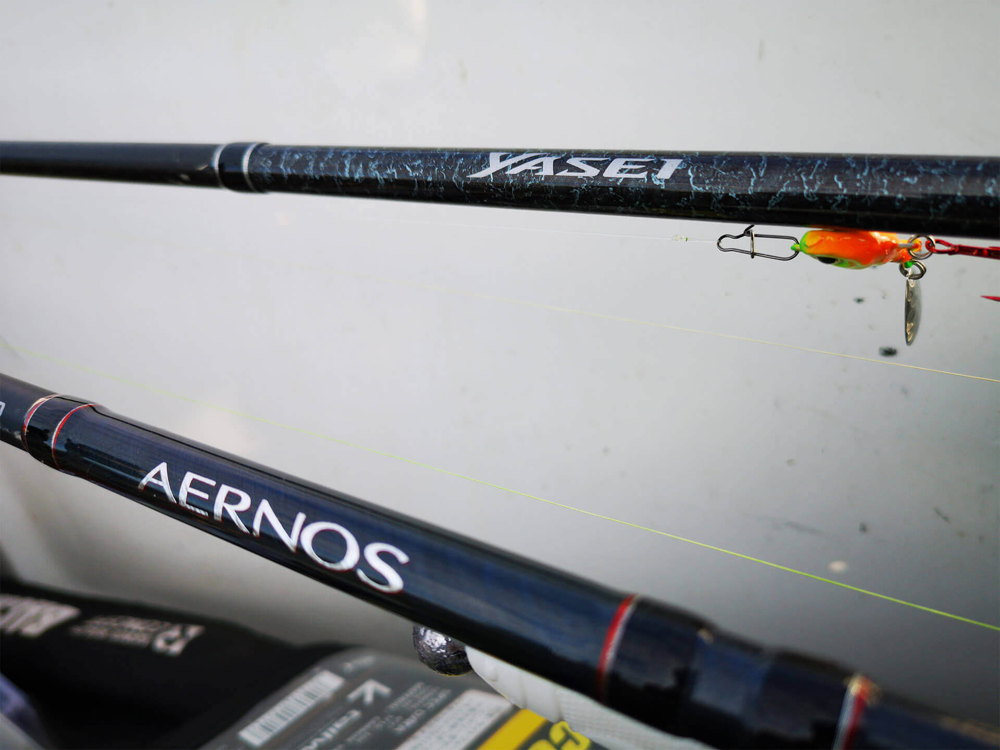

Partidele de pescuit la rapitor sunt incitante. Stilul in sine este unul dinamic, care consuma multa energie. Pescarul de spinning va fi suspus de fiecare data unor provocari care il solicita la maxim.
Fie ca discutam de conditii meteo sau geografia locului unde va pescui la rapitor, se ard multe calorii intr-o astfel de partida de pescuit.
Pentru a prinde un salau, somn, avat, biban sau clean, trebuie sa stim cateva lucruri despre echipamentul de pescuit la rapitor.
Lanseta pentru pescuit la rapitor
Lanseta pentru pescuit la rapitor are mai multe forme. Este gandita sa asigure toate scenariile in care pescarul de rapitor se poate gasi. Exista situatii cand este nevoie sa realizam un pescuit la spinning la departare de mal, cu naluci grele, sau din barca.
Nalucile pentru pescuit la rapitor influenteaza la randul lor, datele constructive ale unei lansete de pescuit la rapitor. Distanta de asemenea. Si nu numai. Trebuie luata in calcul si specia tinta alaturi de dimensiunea exemplarelor din areal.
Lanseta de spinning pentru pescuit la rapitor
Lanseta de spinning pentru pescuit la rapitor este usor de identificat in rafturile unui magazin de pescuit. Se aseamana cu lansetele de crap, doar ca sunt mult mai “ firave “ aparent. In realitate, sunt capabile sa sustina greutati remarcabile si sa lupte “ corp la corp “ cu pesti rapitori si de 60 de kilograme.
Vin in lungiumi cuprinse intre 1,90 metri si 2,70 metri uzuzal. Exceptional le vom gasi construite pe lungimi si de 3,00 metri. Sunt gandite atat pe puteri de lansare cat si pe tipuri de actiune. Acesti ultimi doi termeni ii vom descoperi putin mai tarziu.
Lanseta de casting pentru pescuit la rapitor
Mandrina cu “ tragaci” este primul semn ca am luat contact cu o lanseta de baitcast pentru pescuit la rapitor. Urmatorul aspect putin ciudat vor fi inelele. Sunt multe si mici in diametru. In majoritatea cazurilor, aceste lansete nu depasesc 2,20 metri.
Au fost concepute pentru pescuitul la rapitor din barca. Acest stil de pescuit ofera acces mai mare pescarului de rapitor in zonele unde exista potential piscicol tinta ridicat. Faptul ca poti sonda o zona mai mare este un avantaj. Cu cat zona de explorare se mareste, aici avand avantajul barcii, cu atat lungimea lansetei scade. Dar si aici avem o bariera minima a lungimii. 1,90 metri.

Actiunea lansetei pentru pescuit la rapitor
Stim clar ca unele lansete pentru pescuit la rapitor sunt mai flexibile, in vreme ce altele sunt mai rigide. Usor de sesizat acest aspect atunci cand tinem in mana lanseta si incercam miscari repetate in vertical ( sus / jos) . Aceasta flexibiltate ofera pescarului de rapitor repere importante care il ajuta sa aleaga o lanseta pretabila anumitor naluci si pesti.
Punctele unde lanseta se curbeaza in aceasta miscare , dezvaluie tipologia actiunii cu care a fost echipata. Actiunea lansetelor de pescuit la rapitor poate fi segmentata pe 3 trepte : rapida, moderata sau parabolica.
Aceste tipuri de actiune fac referire la punctul de unde sub tensiune aplicata, lanseta se va indoi si cat de mult o va face. In functie de tipologia constructiva a nalucii de rapitor la care apelam, vom decide si ce lanseta este indicat sa folosim.
Mulineta de spinning
In pescuit la rapitor, “ fara mulineta e pustiu….” . Dar lasand gluma la o parte, mulineta are un aport foarte mare in acest stil de pescuit. Daca intamplator putem intepa pesti mai corpolenti care sunt peste clasa lansetei pe care o utilizam, atunci mulineta scapa turma cum se spune.
Mulineta ofera distanta, anima nalucile , asigura o frana de lupta si ajusteaza tensiunile de la intepare si din drill. Adica putin mai mult ( dar vital ) fata de lanseta. In functie de clasa lansetelor pe care le folosim, avem si mulinetele portivite. Atat la spinning cat si in tehnica baitcast.
Struna pentru pescuit la rapitor
Majoritatea pestilor rapitori au in dotare dinti. Unii mai ascutiti, ganditi sa taie adanc si rapid, altii mai mici, ganditi sa prinda ca in cusca prada.
Firele, indiferent de natura constructiva nu au sanse intr-un astfel de proces. Aici intervine clasa de inaintas dedicat. Denumirea tehnica este de struna.
Struna a aparut ca necesitate in special in pescuitul la stiuca. Dintii din dotarea “doamnei” sunt cu adevarat taiosi. Materiale precum titan, wolfram au aparut in magazinele de pescuit in urma testelor. Rezista la atacurile stiucilor flamande.
Alegerea nalucilor pentru pescuit la rapitor
Daca firele de pescuit sunt un univers, nalucile pentru pescuit la rapitor sunt un adevarat razboi. Al producatorilor. Fiecare are “soldati”, “ trupe speciale” si “divizie de blindate” . Blindatele mortii cum a spus Sven Hassel in romanul sau.
Cele doua mari clase de naluci pentru pescuit la rapitor sunt cele moi ( siliconice ) si cele realizate din materiale dure. In ultima categorie intra voblere, lingurite si derivate. Sa nu uitam ca ultimii ani au adus pe rafturile magazinului de pescuit si hibrizi. Naluci realizate mixt, avand in componenta atat parti metalice cat si parti siliconice.
Nalucile moi pentru pescuit la rapitor sunt realizate din materiale cu textura moale. Denumirea sub care au fost “ inmatriculate” este de shad-uri ( naluci moi in forma de pestisori), grub-uri ( naluci moi cu un corp cilindric si o coada de tip virgula ), creaturi ( naluci moi care imita viermi sau crustacee).